A co-op dark-fantasy action RPG for PC. You and up to three friends relight
the Glass Road, a broken chain of ancient gates, one shard at a time.
Long ago the gates of the Glass Road were shattered and their glass scattered. Now
everyone hostile is digging for it. Glassmarch is a third-person action RPG for one to four
players: you fight with whatever gear you carry, follow the road from a farm valley through a
drowned swamp and under the hills to a walled refuge, and wake each gate by finding the piece
of glass it is missing.
An early prototype, built in Unity. No release date yet, and nothing to download here.
The road
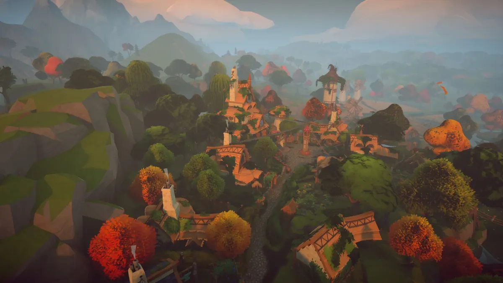
Hearthvale
Goblin-collared dogs on the east road, then a burned farm and a missing family. The
raid captain behind it carried “a shard of old glass, warm and faintly humming, and
orders: ‘More glass in the old stones. The chief pays in silver.’”
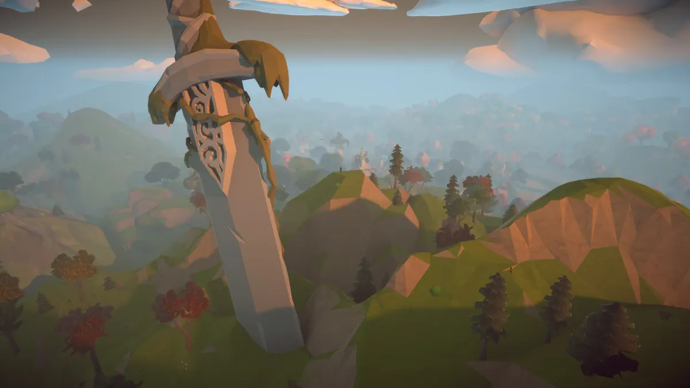
The Sword Gate
A giant sword stands on the hill above Hearthvale, and it was there before the town.
“The ring of stones at its foot used to burn on midsummer nights. A road of glass, she
called it.” Fit the shard, and the first gate of the Glass Road burns again.
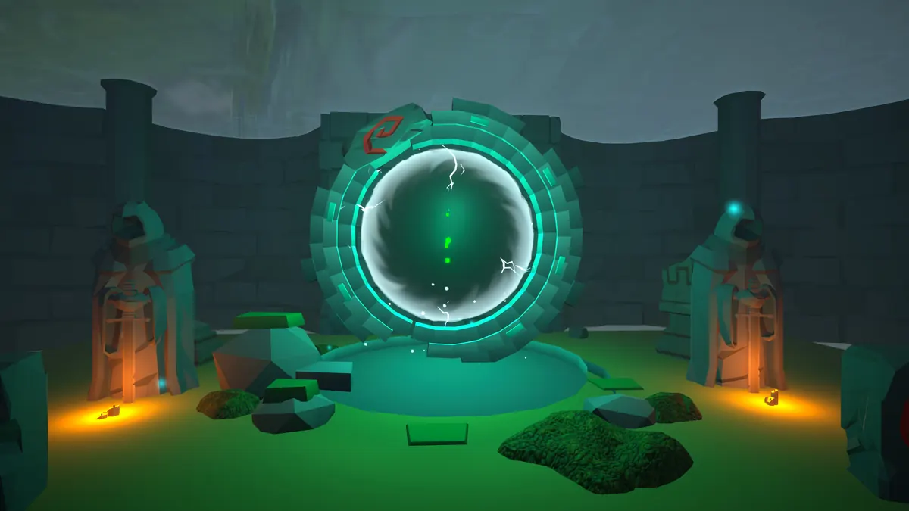
Fenmire and the Drowned Gate
Through the Sword Gate lies a swamp, and under a roofless chapel a flooded ring. It
flares and dies: “it only burned on its twin’s light. A piece of its own glass is
missing.” The goblins in the fen are digging at anything that looks old, and sorting what
they find. “Goblins don’t sort anything, love, not unless someone’s paying.”
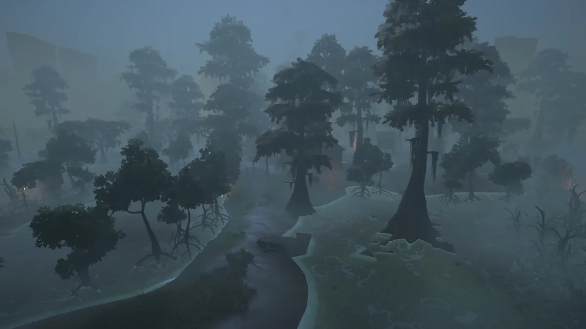
The statue room
“Older than the goblins, older than the fen.” A winged watcher stands over an empty
cradle with fresh pick marks round it. “Whatever sat here, the goblins carried it off.”
Their war chief carries a curved piece of old glass that fits something.
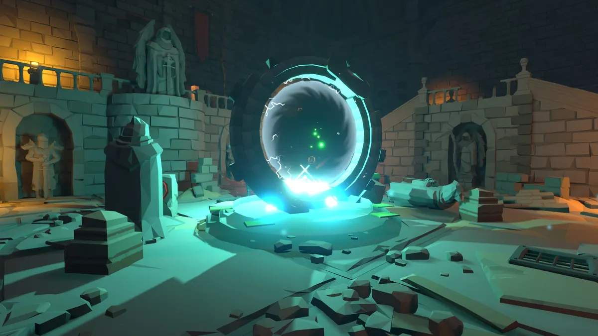
The Sunken Vault and the Twin Gate
Under the fen, the dead stand guard in a soldier’s colours. “These dead wear
Thornmarch’s old colours, turned. Someone is raising an army down here.” Seat the missing
piece in the Twin Gate, and “far underground another ring answers.”
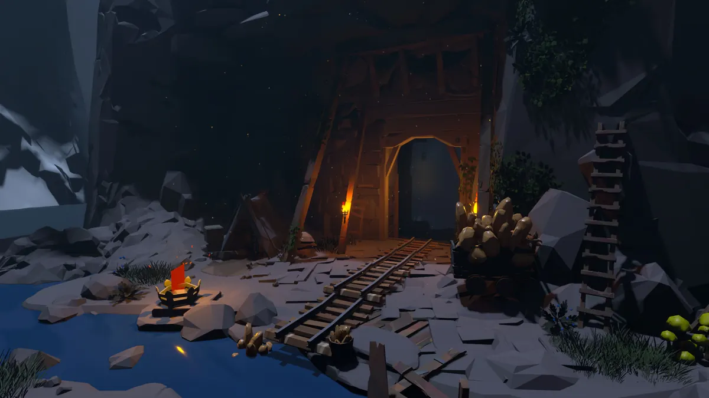
The Underworld and Thornmarch
The Twin Gate opens deep under the hills, in mines the miners abandoned. “The stone the
miners broke into was never empty.” Climb the old haul tunnel into daylight and the
soldiers at the quarry landing lower their spears: “Nobody’s come up that tunnel alive
since the miners quit it.”
In motion
In-engine, HDRP with ray tracing, no HUD.
Golden hour over Thornmarch.Fenmire, where the first gate’s twin lies drowned.The Twin Gate in the Sunken Vault. Far underground, another ring answers.Heal, Ward, Raise Skeleton, Frost Lance and Fireball, cast at a training dummy. A look at the effects, not a fight.
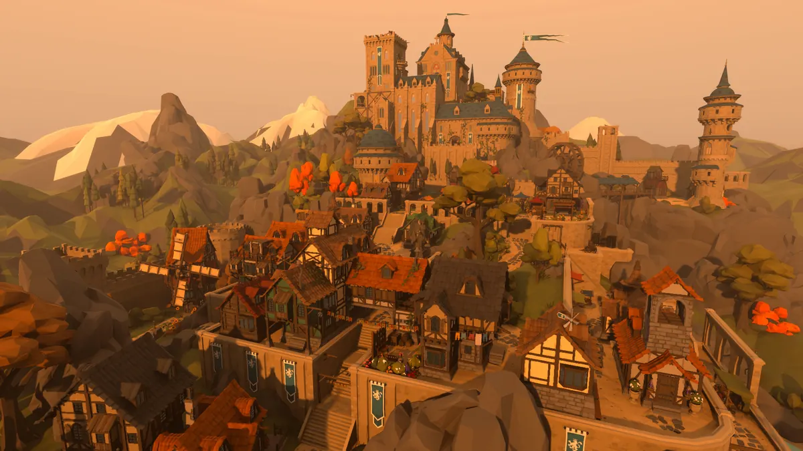
Thornmarch’s castle above the lower town.
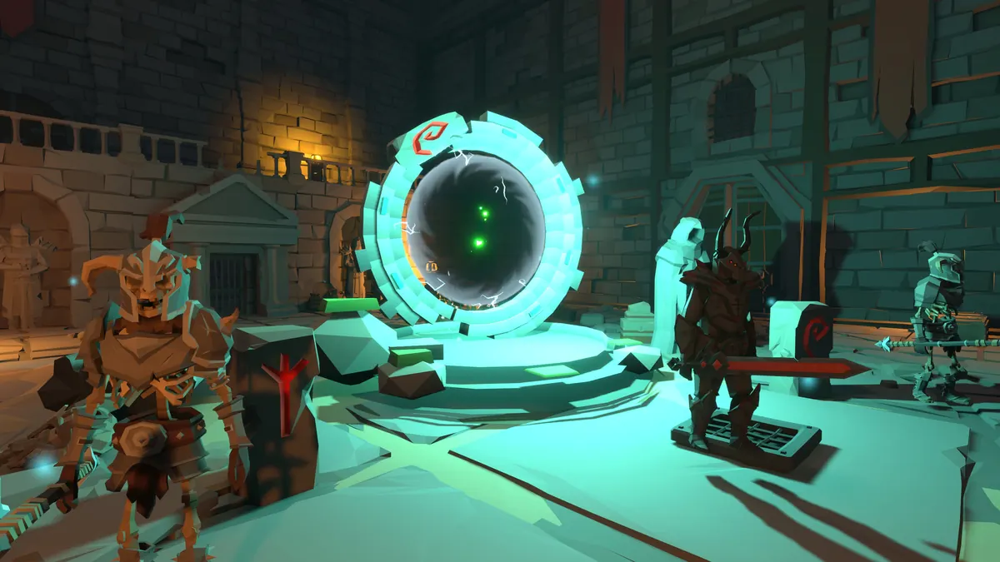
“These dead wear Thornmarch’s old colours, turned.”
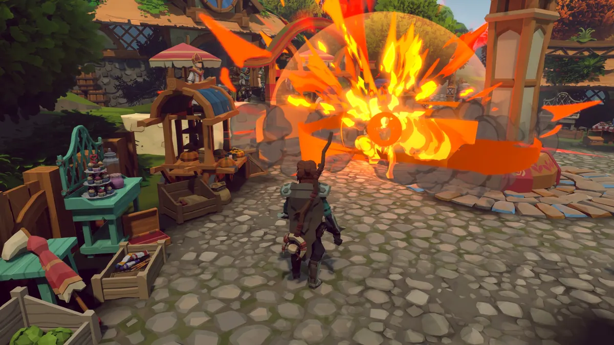
Fireball.
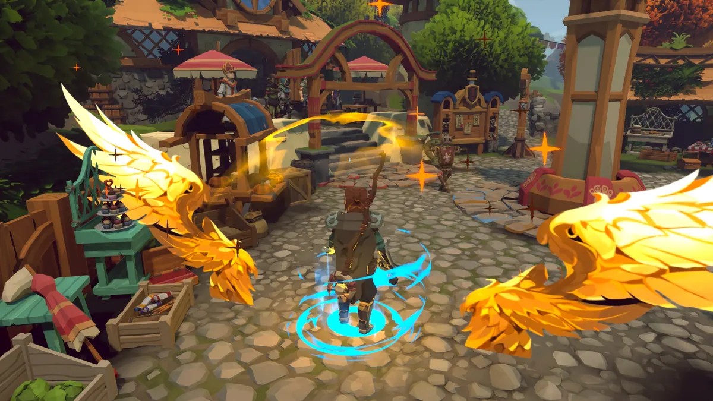
Ward: wings of light and a ring underfoot.
Beyond the road
Sailors swear a ring stands on a wreckers’ harbour, half drowned at high tide. A dwarven
door in the mountain has been shut since the halls under the peaks fell. And one ring, they
say, has never burned at all: “Its twin was never on this world.”
Rumours, for now. None of these places is playable yet.
A look study for the pirate isles, built on Synty’s Pirate Isles demo map converted to HDRP. Not a built Glassmarch level yet.
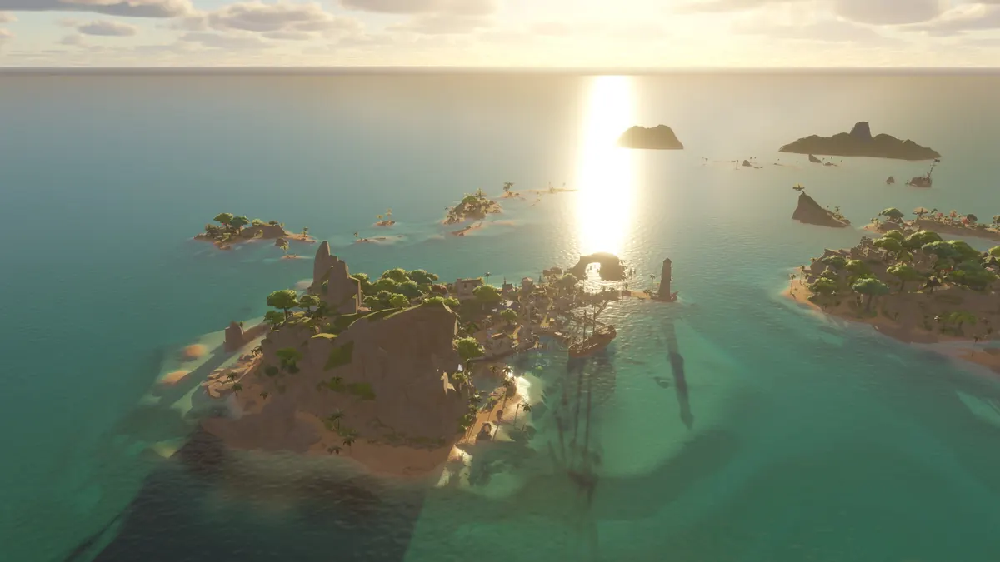
The pirate isles, sun on the water. Look study; the region is not built yet.
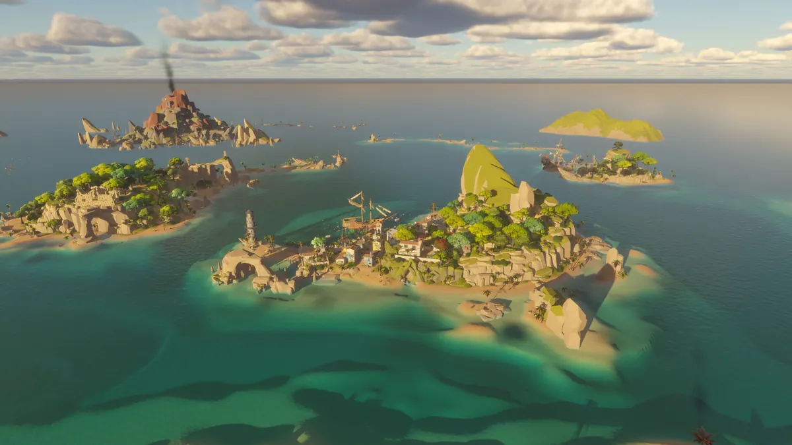
A harbour town, a lighthouse and a smoking peak. Look study of a region still to come.
Status
An early prototype. The route from Hearthvale to Thornmarch plays end to end; the campaign,
progression and balance are still being built. There is no release date yet. The
devlog follows the work.